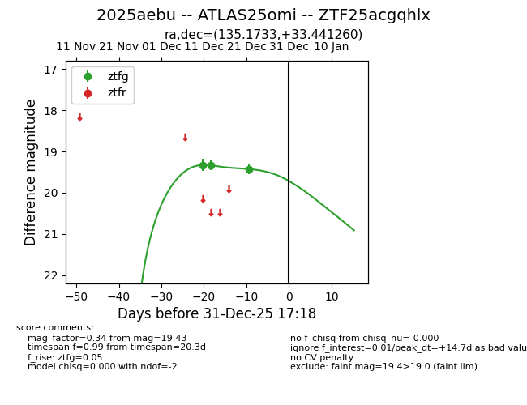
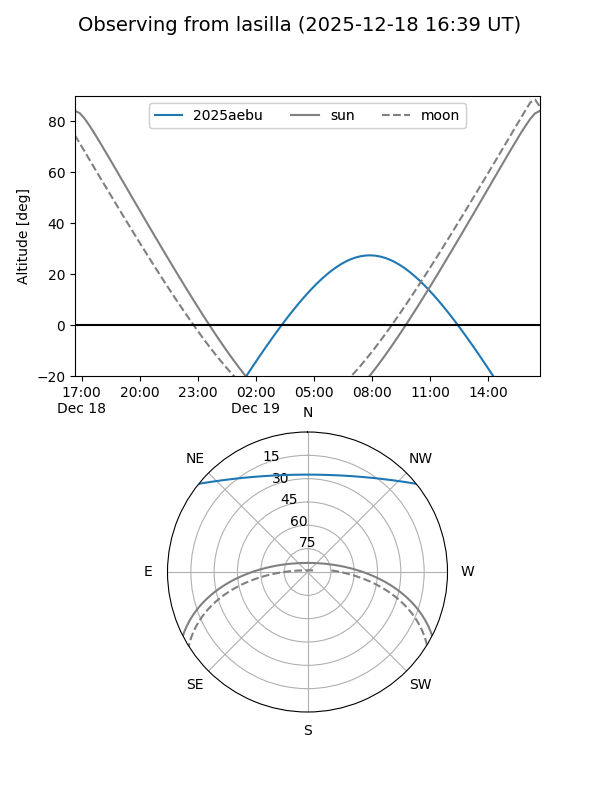
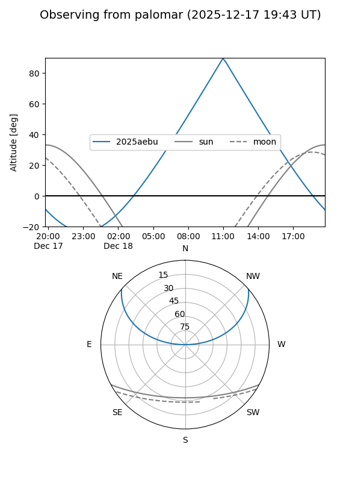
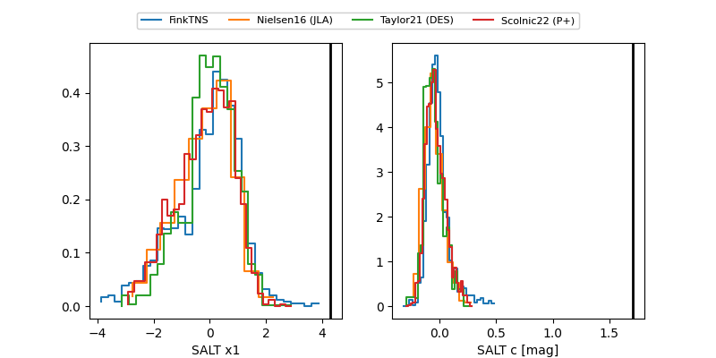

2025aebu
Target 2025aebu at 2025-12-31 18:00
Aliases and brokers:
FINK: link
Lasair: link
ALeRCE: link
TNS: link
YSE: link
alt names
ZTF25acgqhlx (ztf,fink_ztf)
2025aebu (tns,yse)
ATLAS25omi (atlas)
Coordinates:
equatorial (ra, dec) = 135.1733,+33.44126
equatorial (HMS+DMS) = 09:00:41.58,+33:26:28.54
galactic (l, b) = (190.7832,+40.41151)
Flags:
Photometry:
last ztfg=19.43
3 ztfg detections
Lightcurve

Visibility


Additional plots
